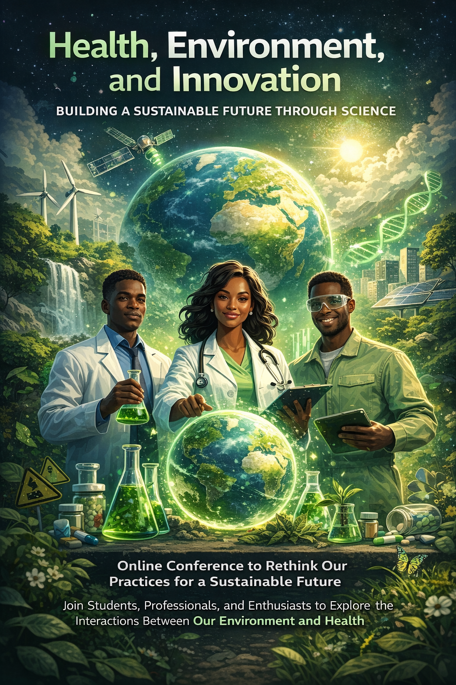
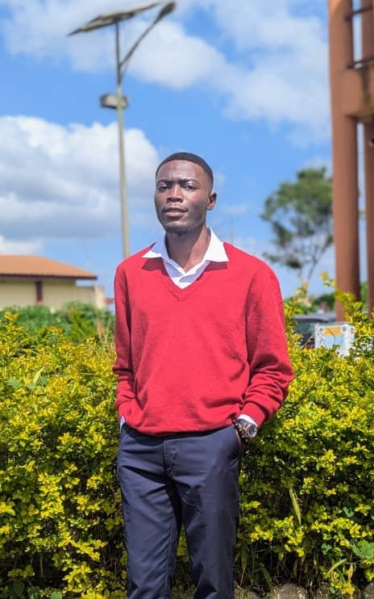
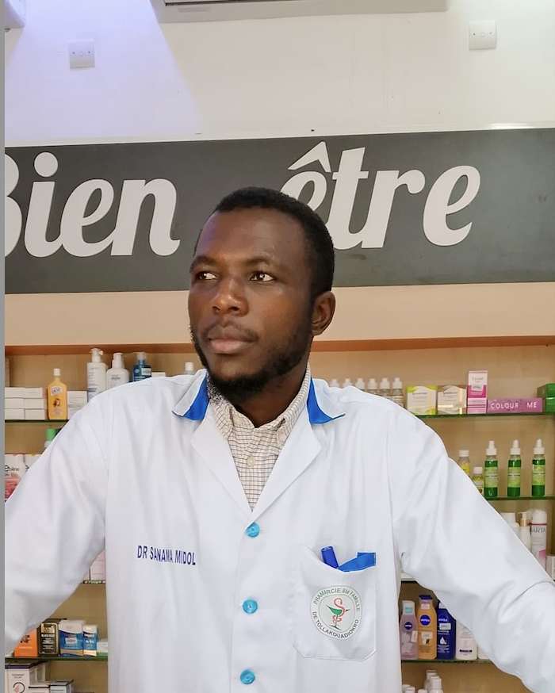
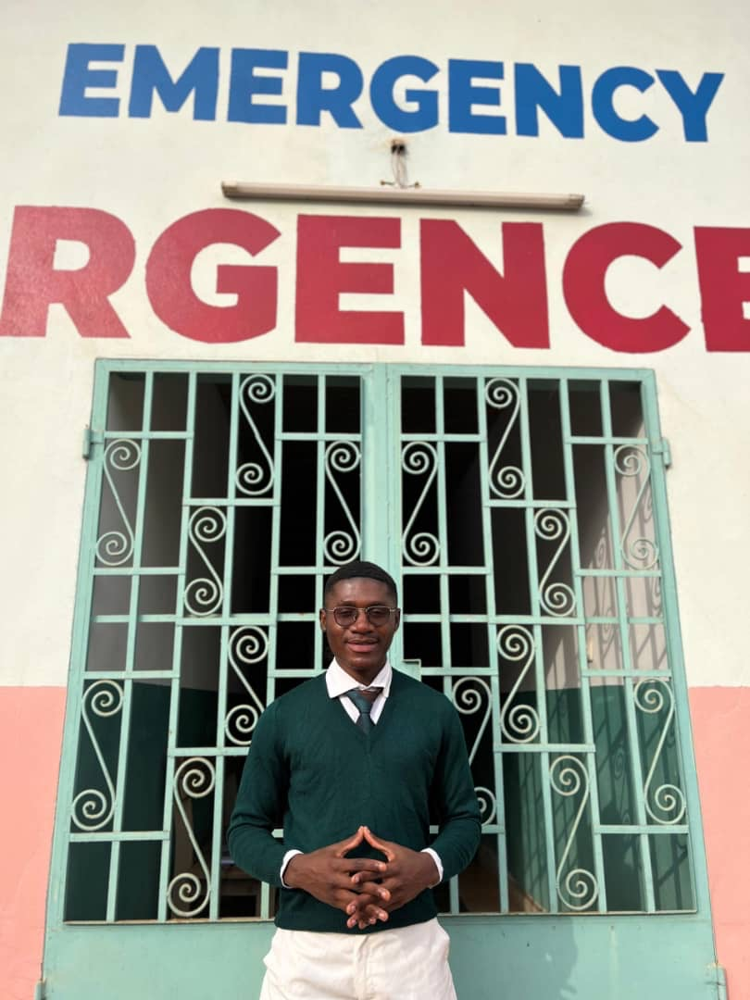
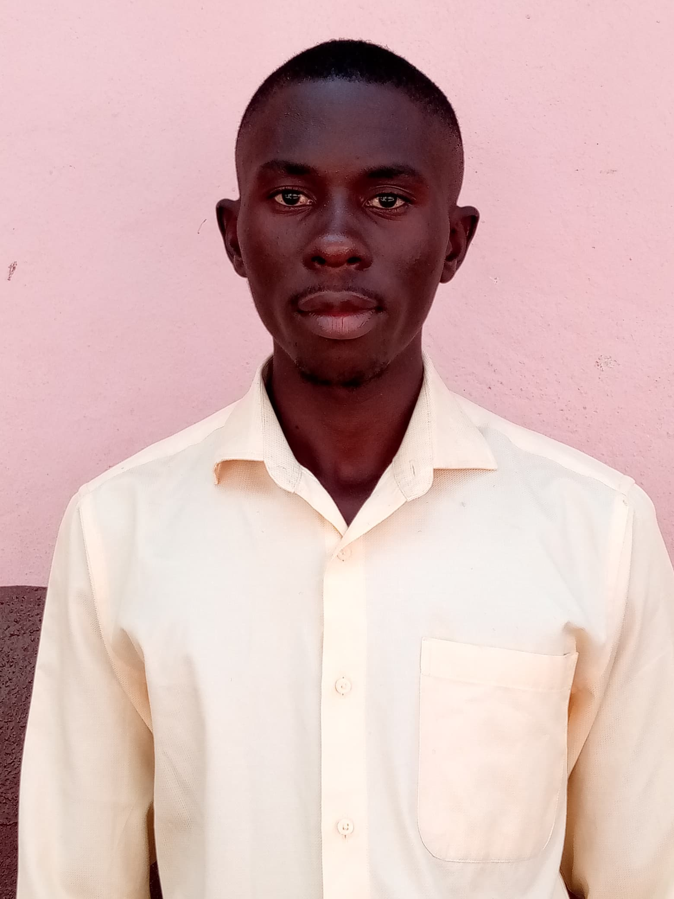

Nous sommes une association engagée à l’intersection de la santé, de l’environnement et de l’innovation. Notre mission est de sensibiliser, mobiliser et agir face aux enjeux liés à la gestion des médicaments, à la pollution et à la santé publique. À travers des actions concrètes et des initiatives scientifiques, nous œuvrons pour un avenir durable où la santé humaine et la protection de la planète vont de pair.

Today, health and environmental challenges are more closely linked than ever. Pollution of air, the soil and water, the inappropriate use of medications, and climate change all have a great impact on human health. In light of these challenges, it is essential that we rethink our practices and adopt an integrated approach in which science plays a crucial role.
Our online conference, dedicated to the theme of “Health, Environment, and Innovation,” is part of this initiative. This forum for discussion aims to bring together students, professionals, and enthusiasts around a common goal: to understand the interactions between our environment and our health, and to explore innovative solutions for a more sustainable future.
Dr. Vanessa TCHADJI, pharmacist, ecotoxicologist, and specialist in environmental risk management, will highlight the role of pharmacists in preventing environmental risks and promoting sustainable health. She will also provide valuable insight into the importance of scientific innovation in protecting human health. Korin NEH NFORBI will discuss the analysis, anticipation, and prevention of risks. This intervention will highlight our understanding of current challenges based on recent evidence. On the other hand, Janvier NKEME will emphasize the relationship between the exposome and health, shedding light on its impact on the future.
Because every action counts, this initiative is also a call for collective action. Together, we can foster more responsible practices, promote innovation, and help build a world where human health and the health of the planet go hand in hand.
Président

Vice president
Secrétaire Générale
Secrétaire Adjointe

Chargé de réseautage et du networking

Chargé de communication
Chargé des plannings

Censeur
Vous avez des questions ou une suggestion ? Écrivez-nous directement.
Rejoignez notre communauté et participez activement à nos actions.
Devenir membre